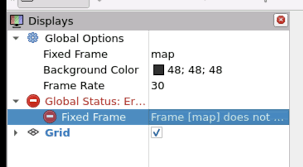
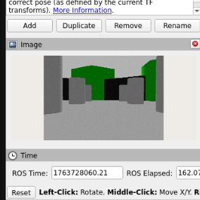
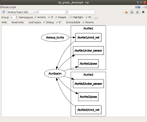

Visualization & Debugging
Overview
Visualization and debugging tools are essential for understanding robot behavior, validating sensor data, and diagnosing issues during development.
This section introduces the primary tools used with Titan Robot to visualize data and debug the ROS 2 system.
The main tools covered are:
- RViz2
- rqt tools
- ROS 2 command-line utilities
RViz2 Overview

RViz2 is the primary visualization tool used to view the robot’s state, sensor data, and navigation information.
With RViz2, you can visualize:
- Robot model (URDF)
- Coordinate frames (TF)
- Laser scan data
- Odometry
- Maps
- Navigation goals and paths
RViz2 is typically launched automatically during robot bringup.
RViz2 Configuration
Fixed Frame

Ensure the Fixed Frame is set correctly:
- Recommended:
odom(ormapwhen mapping/localization is active)
Incorrect fixed frames are a common source of visualization issues.
Common RViz Displays
Recommended displays to enable:
- RobotModel – Shows the robot URDF
- TF – Visualizes coordinate frames
- LaserScan – Displays LIDAR data
- Odometry – Visualizes robot motion
- Map – Shows generated or loaded maps
- Path – Displays navigation paths
Verifying Sensor Data
LIDAR Visualization

- Add a LaserScan display
- Topic:
/scan - Verify that obstacles appear correctly around the robot
- Ensure scan rotates with the robot frame
Camera Visualization (V3)

- Add an Image display
- Topic:
- V2:
/camera/image_raw - V3:
/camera/color/image_raw - Confirm image stream updates in real time
TF Debugging
TF (transform) errors are one of the most common issues in ROS-based systems.
Visualizing TF Frames
Enable the TF display in RViz2 to:
- Verify correct frame hierarchy
- Check transform directions
- Identify missing or misaligned frames
Common frames include:
mapodombase_linklasercamera_link
Generating TF Tree
ros2 run tf2_tools view_frames

This generates a PDF showing the complete TF tree.
Odometry Debugging
Checking Odometry Topic
ros2 topic echo /odom

Verify that:
- Position updates when the robot moves
- Orientation changes during rotation
- No sudden jumps or drift at standstill
Visualizing Odometry
- Add Odometry display in RViz2
- Check smooth motion and correct orientation
- Verify odom frame alignment

rqt Tools
rqt provides GUI-based debugging and introspection tools.
rqt_graph
rqt_graph

- Visualizes node and topic connections
- Useful for verifying data flow
- Helps detect missing or misconnected nodes
rqt_plot
rqt_plot
- Plot values over time
- Useful for:
- Odometry velocity
- Encoder-derived data
- Sensor readings
rqt_console
rqt_console
- Displays ROS 2 log messages
- Filter logs by severity and node
- Useful for runtime error detection
Command-Line Debugging Tools
List Nodes
ros2 node list
Inspect Node Info
ros2 node info <node_name>
Topic Frequency
ros2 topic hz /scan
ros2 topic hz /odom
Ensures data is being published at expected rates.
Common Debugging Scenarios
| Issue | Debugging Step |
|---|---|
| Robot not moving | Check /cmd_vel and serial node |
| No LIDAR data | Check /scan topic and USB connection |
| Navigation fails | Inspect costmaps and TF |
| Map drifting | Check odometry accuracy |
| RViz empty | Verify fixed frame and TF tree |
Debugging Best Practices
- Always check
/tffirst - Verify sensor topics before navigation
- Use low speeds during testing
- Debug one subsystem at a time
- Keep RViz displays minimal to improve performance
With proper visualization and debugging, diagnosing robot issues becomes significantly easier 🚀